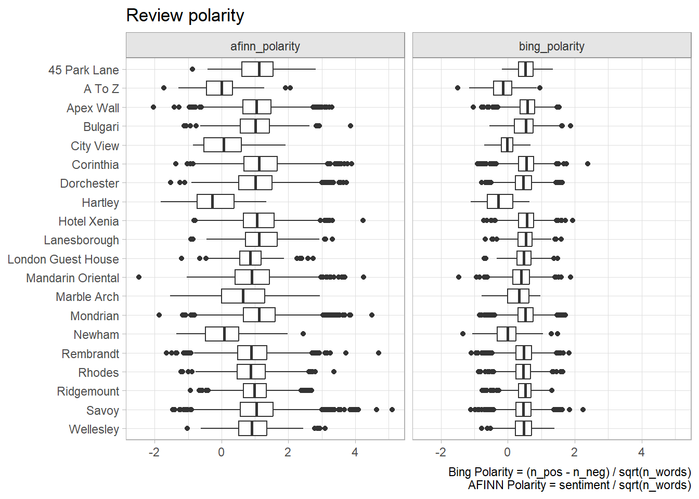

2.2 STM
STM incorporates arbitrary document metadata into the topic model. The goal of STM is to discover topics and estimate their relationship to the metadata.
- Topical prevalence. If what topics are discussed depends on the metadata features, control for them in the prevalence (the gamma matrix). E.g., negative hotel reviews might focus on different topics than positive reviews.
- Topical content. If how a topic is discussed depends on metadata features, control for them in the content (the beta matrix). E.g., visitors from the US may discuss hotels differently than visitors from the UK.
Algorithm
STM is similar to LDA in that it assumes each document is created by a generative process where topics are included according to probabilities (topical prevalence) and words are included in the topics (topical content) according to probabilities. STM adds the possibility of including topical prevalence covariates, and topical content covariates.
Data Preparation
Chapter 1 prepped the data by correcting misspellings, lemmatizing words, and removing stop words
The stm package represents a text corpus as an object with three components: a sparse matrix of counts by document and vocabulary word vector index, the vocabulary word vector, and document metadata. I used STM for my Battle of the Bands project.
stm::textProcessor() is essentially a wrapper around the tm package. It produces a list object with three main components:
vocab, a named vocabulary vector, one element per distinct word.documents, a list of matrices, one per document. Each matrix has 2 rows of integers. The first row is indices from the vocabulary vector; the second is their associated word counts. This is a concise representation of a document term matrix. The processing step sometimes removes a few documents if they are empty after removing stopwords, numbers, est.meta, a metadata data frame, one row per document containing the feature cols.
This step took about 3 minutes to run, so I ran it once then saved the result.
stm_processed <-
stm::textProcessor(
documents = hotel_prep$review_words,
metadata = hotel_prep %>% select(rating, reviewer_loc, review),
lowercase = FALSE,
removestopwords = FALSE,
removenumbers = FALSE,
removepunctuation = FALSE,
stem = FALSE
)
saveRDS(stm_processed, file = "input/stm_processed.RDS")After processing, prepare the corpus by removing infrequently used words. stm::prepDocuments() removes infrequently appearing words, and removes any documents that contain no words after processing and removing words. 1% (about 230) is a conservative threshold. The plot below shows that removing even a few words will remove some documents, but you can still retain most document

stm_prepared <-
stm::prepDocuments(
stm_processed$documents,
stm_processed$vocab,
stm_processed$meta,
lower.thresh = length(stm_processed$documents) * .01
)## Removing 26136 of 26886 terms (239369 of 943763 tokens) due to frequency
## Removing 21 Documents with No Words
## Your corpus now has 23352 documents, 750 terms and 704394 tokens.Fit
The stm package allows you to either specify the number of topics (K) to identify, or it can choose an optimal number by setting parameter K = 0. The resulting probability distribution of topic words (beta matrix) will be a K x rlength(stm_prepared$vocab)matrix. The probability distribution of topics (gamma matrix, theta in the stm package) will be a 23,352 x K matrix. I expect topics to correlate with the review rating, soratingis a prevalence covariate, and I expect word usage to correlate with the reviewer location, soreviewer_loc` is a topical content covariate.
Running the model with K = 3 threw an error.
Error: chol(): decomposition failed
I set it to K = 4 and it worked. It took a couple minutes to run, so I ran it once then saved the result.
Interpret
The fit summary has three sections showing the tops words. The first section shows the prevalence model; the second shows the topical content model; and the third shows their interaction.
## A topic model with 4 topics, 23352 documents and a 750 word dictionary.## Topic Words:
## Topic 1: favorite, notch, corinthia, awesome, property, exceed, mandarin
## Topic 2: neighborhood, convenient, victoria, heathrow, ride, underground, rembrandt
## Topic 3: promenade, beaufort, celebration, celebrate, savoy, surrounding, american
## Topic 4: closet, clothe, move, desk, smell, light, tub
##
## Covariate Words:
## Group Other: renovation, smile, renovate, direct, miss, europe, directly
## Group United Kingdom: partner, whilst, saturday, sunday, party, fab, round
## Group United States: hotel's, spectacular, elegant, accommodate, perfection, tate, renovation
##
## Topic-Covariate Interactions:
## Topic 1, Group Other: bridge, theater, boutique, blackfriars, lane, modern, pool
## Topic 1, Group United Kingdom: wed, fault, trouble, anniversary, brilliant, penny, faultless
## Topic 1, Group United States: exquisite, club, square, trafalgar, city, gorgeous, tate
##
## Topic 2, Group Other: british, share, block, host, store, ridgemount, advice
## Topic 2, Group United Kingdom: apex, appoint, comfy, blackfriars, toiletry, spacious, club
## Topic 2, Group United States: theater, phone, wonderful, tour, bridge, express, block
##
## Topic 3, Group Other: wed, anniversary, fab, attend, partner, wow, round
## Topic 3, Group United Kingdom: daughter, cake, rush, pianist, ritz, birthday, pass
## Topic 3, Group United States: classic, housekeeping, amenity, kid, speak, miss, level
##
## Topic 4, Group Other: club, pillow, executive, cold, fall, type, fan
## Topic 4, Group United Kingdom: lift, downstairs, miss, rumpus, bottle, car, complimentary
## Topic 4, Group United States: stylish, feature, renovation, black, elevator, boutique, smoke
## If this was just a regular topic model, or a prevalence or content model, we’d see top words by 4 metrics: highest probability, FREX, lift, and score.
- Highest probability weights words by their overall frequency.
- FREX weights words by their overall frequency and how exclusive they are to the topic.
- Lift weights words by dividing by their frequency in other topics, therefore giving higher weight to words that appear less frequently in other topics.
- Score divides the log frequency of the word in the topic by the log frequency of the word in other topics.
Let’s fit a new model just to show that.
set.seed(1234)
stm_fit_simple <- stm::stm(
stm_prepared$documents,
stm_prepared$vocab,
K = 4,
# prevalence = ~ rating,
# content = ~ reviewer_loc,
data = stm_prepared$meta,
init.type = "Spectral",
verbose = FALSE
)
saveRDS(stm_fit_simple, file = "input/stm_fit_simple.RDS")## Topic 1 Top Words:
## Highest Prob: stay, london, staff, service, excellent, restaurant, location
## FREX: spa, corinthia, concierge, luxury, mondrian, love, pool
## Lift: personal, oriental, mandarin, notch, corinthia, pleasure, property
## Score: personal, london, service, stay, spa, corinthia, location
## Topic 2 Top Words:
## Highest Prob: breakfast, walk, room, stay, location, clean, london
## FREX: tube, station, museum, hyde, street, bus, walk
## Lift: hyde, paddington, albert, ridgemount, bus, kensington, rhodes
## Score: hyde, tube, station, museum, bus, walk, clean
## Topic 3 Top Words:
## Highest Prob: savoy, bar, tea, lovely, staff, special, birthday
## FREX: afternoon, birthday, savoy, cocktail, cake, american, treat
## Lift: scone, pianist, cake, piano, beaufort, afternoon, sandwich
## Score: scone, savoy, afternoon, birthday, tea, cake, cocktail
## Topic 4 Top Words:
## Highest Prob: room, night, check, stay, bed, book, bathroom
## FREX: check, charge, bath, call, floor, pay, issue
## Lift: rumpus, robe, mirror, wake, smell, curtain, corridor
## Score: rumpus, room, check, shower, bed, bathroom, floorIt is interesting that the top terms for UK did not include “restaurant” or “location”. The top terms for the US did not include “excellent” or “amaze”, but did include “love”.
stm_tidy <- tidy(stm_fit)
stm_top_tokens <-
stm_tidy %>%
mutate(topic = factor(paste("Topic", topic))) %>%
group_by(topic, y.level) %>%
slice_max(order_by = beta, n = 10) %>%
ungroup()
stm_top_tokens %>%
filter(topic == "Topic 1") %>%
ggplot(aes(x = beta, y = reorder_within(term, by = beta, within = topic))) +
geom_col() +
scale_y_reordered() +
facet_wrap(facets = vars(y.level), scales = "free_x", ncol = 3) +
labs(y = NULL, title = "STM Top 10 Terms for Topic 1")
As we did with the LDA model, we can assign topic labels with Open AI.
stm_topics <-
stm_top_tokens %>%
nest(data = term, .by = topic) %>%
mutate(
token_str = map(data, ~paste(.$term, collapse = ", ")),
topic_lbl = map_chr(token_str, get_topic_from_openai),
topic_lbl = str_remove_all(topic_lbl, '\\"'),
topic_lbl = snakecase::to_any_case(topic_lbl, "title")
) %>%
select(-data)
# Save to file system to avoid regenerating.
saveRDS(stm_topics, file = "input/stm_topics.RDS")## # A tibble: 4 × 3
## topic token_str topic_lbl
## <fct> <list> <chr>
## 1 Topic 1 <chr [1]> Luxury Stay in London
## 2 Topic 2 <chr [1]> Comfortable Stay Near London
## 3 Topic 3 <chr [1]> Afternoon Tea at the Savoy
## 4 Topic 4 <chr [1]> Hotel StayAnother way to evaluate the model is to print reviews that are most representative of the topic. Topic 1
stm::findThoughts(
stm_fit,
n = 3,
texts = stm_prepared$meta$review,
topics = 1,
meta = stm_prepared$meta
)##
## Topic 1:
## To those who have stayed here in the past and have said anything negative of this hotel and services are foolish beyond belief. This hotel receives a five star plus recognition in my book of first class travels. It is one on my top ten list of first class hotel experiences. In fact I would confidently say that this hotel and it's staff ranks as the top three luxury hotel experiences that I have had so far. First and foremost I must say that the Fine Hotels and Resorts Pkg. is well worth it at this hotel. They truly went above and beyond to recognize our patronage. Second, this hotel went above and beyond to recognize our anniversary. Third, this hotel boasts the most superior, thoughtful and careful staff service that I have ever experienced in a first class hotel. While the hotel itself has an old world charm to it, it never underestimates the luxury offerings for it's guests. There is absolutely nothing that I can find fault during our week stay at is hotel. I would highly recommend this hotel for anyone looking for luxury and service. If in London again, I would seriously consider staying here again. I must be honest when I say that two years ago I tried the Mandarin hotel chain for my very first time in NYC and was disappointed. Since then I have tried the Mandarin Las Vegas and now London and both times I have been very impressed. I am confident to say that Mandarin Oriental Hotels is now my new favorite first class hotel chain. If you like first class hotels and luxury this hotel is for you. Enjoy it as much that I did. Bravo to the entire management team at the Mandarin Hyde Park London for maintaining such an impeccable property and focus on customer satisfaction. Every staff member at this hotel must receive a huge appreciation and thanks on behalf of our entire family for giving us a ver memorable and stellar holiday stay. Thank you!
## This was our third trip, the Corinthia London is a perfect 5 star and could be rated higher, the service is impeccable which is sometimes difficult to find in London, the food is fantastic and all the hotel has to offer is top notch with an a beautiful Spa in a prime location, it actually has everything you could want, the rooms and suites are beautifully appointed and very comfortable, it is currently our favourite hotel in central London and we will back and recommend to all, it's also very family friendly as well as being an ideal romantic stay or a luxurious base to experience the city, world class!
## I stayed at the Corinthia for three nights during a business trip and REALLY liked this hotel. I've stayed at a number of other luxury 5-star properties in London and this is by far my favorite. The rooms are beautiful and well appointed and the spa is just amazing. More importantly, the service is outstanding and it feels like everyone really cares and is genuinely concerned about making sure you are enjoying your visit. Highly recommend staying here.